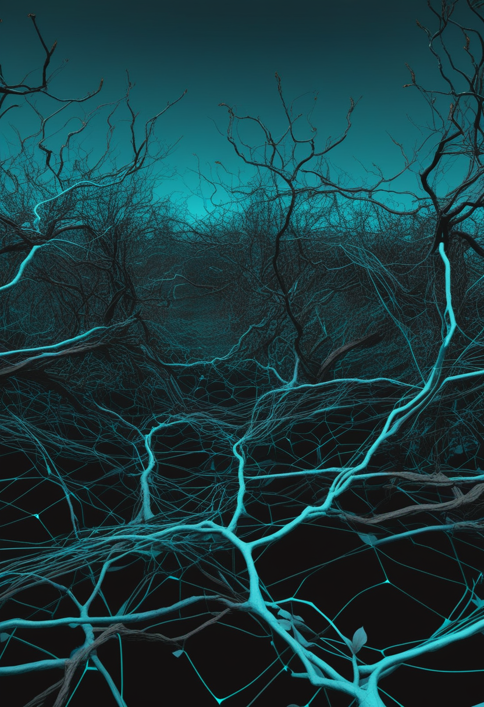
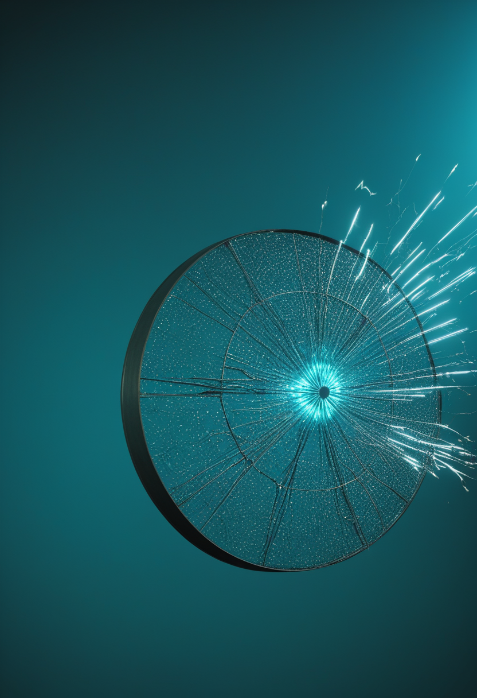
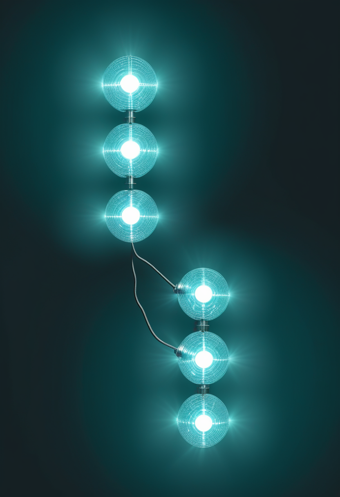

火曜日の便り。理化学研究所の研究チームが、シリコン中の電子スピン量子ビット5個を1本のマイクロ波線で同時に駆動しても、操作精度を約99.9%に保てたとNature Physicsに報告した。量子ビット間の位相のずれを対ごとの校正で打ち消す手法が鍵になった。同じ未明、JAXAの火星衛星探査機MMXが種子島から打ち上げられ、フォボスの試料を持ち帰る11年の旅に出発している(結果は本稿執筆時点で未確認)。基盤の章ではDRCのエボラが確定9,455例・死亡4,561人に達したことと、ケニアの8例目、日本の麻疹を『輸入由来の再興』と分析した米CDCの報告を届ける。自由の章では視線入力とBCIを同じ患者群で比べる臨床試験の登録と、Neuralinkの装着者が自分の声で『アイ・ラブ・ユー』と伝えた映像を。命の章では、生後90日以内に治療を始めた子の73.2%が独歩を達成したというCure SMAの調査を。美の章ではトルコで見つかった3,400年前のヒッタイト王家文書庫と、神経変性疾患で人格が変わった家族への『生前の悲嘆』に向けた構想を取り上げる。
理化学研究所創発物性科学研究センター(CEMS)の量子機能システム研究グループ(Yi-Hsien Wu氏・Leon Camenzind氏ら、グループディレクター樽茶清悟氏)は、シリコン中の電子スピンでつくる量子ビット5個を1本のマイクロ波制御線で同時に駆動しても、単一量子ビットゲートの操作精度を約99.9%に保てたとNature Physicsに報告した(DOI:10.1038/s41567-026-03466-2、10月16日付プレスリリース)。1個だけを操作した場合はいずれも99.99%を大きく超え最良で約99.999%、3個までの同時操作なら99.99%超を記録している。精度を落としていた主因は、マイクロ波制御信号が量子ビットのエネルギー準位をわずかに変化させるACシュタルク効果で、複数を同時に駆動するとこの位相のずれが互いの制御を乱していた。チームは量子ビットの全組み合わせを個別に校正するのではなく、対ごとの位相校正とデバイス設計の最適化で不要なずれを打ち消す、拡張性のある手法を開発した。残る精度低下は位相のずれではなく、同時駆動に要するマイクロ波出力の増加に伴う駆動誘起デコヒーレンスで、これは素子設計の改良で緩和できる可能性があるという。1本の配線を共有したまま量子ビット数を増やす道筋を示した成果で、JST ムーンショット目標6のシリコン量子計算機プロジェクトの一環として行われた。
Cure SMAが実施する年次「コミュニティ・アップデート調査」(2025年データ)の解析が、10月3日のNeurologyLive掲載記事としてAANEM(米国神経筋・電気診断医学会)2026年次総会(9月29日〜10月2日、オーランド)で発表された。最初の疾患修飾療法を生後90日以内に始めた群(41人、調査時平均4.1歳)は独歩達成率73.2%だったのに対し、90日を過ぎて始めた群(32人、平均6.0歳)は36.7%にとどまった。側弯症は早期群24.4%・後期群62.5%、嚥下困難を半分以上の時間で報告したのは早期群7.3%・後期群19.4%。早期群はタイプ1が48.8%、後期群はタイプ2が47.1%を占め、両群の重症度構成がそろっていない点は解釈上の留意点として記事内でも触れられている。別の2025〜2026年調査(生後21日以内を基準とする解析)では独歩率83%という数値も報告されているが、基準が異なるため90日基準の今回の数値と直接比較はできないと記事は明記している。
新薬承認も新生児スクリーニングの制度変更もない一日だったが、調査データだけでも『いつ治療を始めるか』という古くからの問いに、独歩率73.2%対36.7%という具体的な数字が改めて重みを与えた。
ALS患者を対象に、Cognixionの装着型ブレイン・コンピューター・インターフェース(BCI)による意思伝達装置を、患者が既に使っている視線入力型の装置と直接比較する臨床試験が、10月13日に米国の臨床試験登録(ClinicalTrials.gov)へ初回登録された(NCT07871071)。これまでのBCI研究の多くは『埋め込みでどこまでできるか』という単独の性能を競っていたが、この試験は『現に普及している視線入力より実際に優れているのか』を同じ患者群で問う設計になっている。視線入力は安価で非侵襲という利点があるが、眼球運動そのものが衰える進行期には使えなくなる制約がある。両者を同一条件で比べたデータは、進行期の意思伝達手段を選ぶ際の実務的な根拠になりうる。
Neuralinkは9月16日、同社のVOICE試験に参加するALS患者テリー氏が、脳インプラントを通じて妻に『アイ・ラブ・ユー』と伝える短い映像を公開した。ABC Newsも9月19日付でこの実演を報じている。信号の復号結果はxAI/SpaceXの音声合成『Grok Voice』を通じて出力され、同社によれば本人の自然な声に近い形で再現されるという。報道によれば、テリー氏はNeuralinkの意思伝達研究で3人目の参加者とされる。ただし今回公表されているのは短い実演映像のみで、精度・遅延・語彙数といった定量的な臨床データは同社から公表されていない。発話を失った人が『自分の声』を取り戻す映像としての訴求力と、査読を経た性能データの不在という二つの側面が、今回も併存している。
視線入力とBCIを同じ土俵で比べる試験設計と、声を失った人が自分の声で想いを伝える映像。前者は厳密さを、後者は訴求力を武器にしており、どちらも『生活の中で使えるか』という同じ問いに別の角度から迫っている。

欧州疾病予防管理センター(ECDC)が10月18日に更新した集計によると、コンゴ民主共和国(DRC)のエボラ(ブンディブギョ型)は10月17日時点で確定9,455例・死亡4,561人に達した。粗致死率は約48.3%で、ここ数週間48%前後の水準からほとんど動いていない。WHOのDisease Outbreak News(10月8日付、10月6日時点データ)は確定8,728例・死亡4,205人としており、集計機関ごとの締め日の違いで2週間近い遅れが生じている点は変わらず残る。本流行は5月17日に国際的に懸念される公衆衛生上の緊急事態(PHEIC)と宣言されたまま継続している。
ケニア保健省は10月17日に4例を追加して計7例としていたが、ECDCの10月18日時点の集計ではケニアの累計が8例・死亡1人に達した。現地報道によれば、8例目は発端患者の入院時に付き添い業務を行っていた49歳の人物で、週末に実施した接触者38人の検査のうち1人がブンディブギョ型陽性と確認され、隔離下にあるという。ケニア保健省当局者によれば陽性者全員にモノクローナル抗体が投与されている。この8例目の個人の詳細(年齢・職務)は現地通信社1社の報道にとどまり、保健省の一次発表文では確認できていない。ブンディブギョ型には承認済みのワクチンも特異的治療薬もなく、候補はいずれも臨床試験段階である。

米CDCのEmerging Infectious Diseases誌32巻11号(2026年11月号)が早期公開した論文は、日本における麻疹の2024〜2026年の再興を分析し、国内での持続的な感染拡大ではなく『輸入由来』の繰り返しによるものだと結論づけた。日本は2015年にWHOから麻疹排除状態の認定を受けているが、論文は2026年第20週までに498例が届け出られ、これは2020年以降のどの年間値をも上回る水準だと指摘し、排除状態が一度の輸入例から簡単に揺らぎうる脆さを論じている。これは厚生労働省が週次で発表する定点報告とは別の、学術誌による振り返り分析であり、直近の流行曲線そのものを更新するものではない。
DRCのエボラは集計のたびに前回を上回り、ケニアでは輸入例の連鎖がもう一人に及び、日本では『排除済み』のはずの病気が輸入例から繰り返し揺らぐ。いずれも規模は違うが、監視網の外からの一撃に弱いという同じ構造が見える。

理化学研究所創発物性科学研究センター(CEMS)の研究チームは、シリコン電子スピン量子ビット5個を1本のマイクロ波線で同時に駆動しても、操作精度を約99.9%に保てたとNature Physicsに報告した(DOI:10.1038/s41567-026-03466-2)。精度低下の主因だったACシュタルク効果による位相のずれを、量子ビットの対ごとの校正という拡張性のある手法で打ち消した。1個のみの操作なら99.999%近くに達し、3個までの同時操作なら99.99%を超える。残る劣化要因は駆動に要する電力増加に伴うデコヒーレンスで、位相のずれとは別の課題として残る。配線を共有したまま量子ビット数を増やす製造上の道筋を示した成果である。
JAXAは10月20日午前4時41分3秒(日本時間)、火星衛星探査機MMX(Martian Moons eXploration)をH3ロケット(24L形態、10号機)で種子島宇宙センターから打ち上げた。打ち上げ予備期間は10月21日から11月7日まで確保されており、MMXは火星の衛星フォボスから世界初の試料採取・地球帰還を目指す。計画では2027年8月に火星周回軌道へ到達、同年9月からフォボス周回観測を開始し、試料回収カプセルは2031年にオーストラリアのウーメラ立入禁止区域へ着陸する予定。NASA・CNES(フランス国立宇宙研究センター)・DLR(ドイツ航空宇宙センター)・ESAが協力機関として参加している。本稿執筆時点(日本時間打ち上げから約1時間後)では、軌道投入の成否を独立した報道で確認できておらず、結果は別途確認が必要である。
トリニティ・カレッジ・ダブリンのチームは、ジェイムズ・ウェッブ宇宙望遠鏡が2023年に取得した観測データを使い、約20光年先の褐色矮星SIMP 0136の明るさの揺らぎを主成分分析で分解した成果をAstronomy and Astrophysicsに発表した。変動の大部分はわずか2つの成分、すなわち温度変化と雲の鉛直方向の重なり方で説明でき、自転に伴って視界に入る3つの『天候状態』が12回転以上にわたって繰り返し現れることを確認した。1ピクセルにしか写らない天体の大気の変化を、季節のように整理できたことが要点である。
The Lancetの10月17日号(第408巻10564号)は、心血管リスクが高い2型糖尿病の成人を対象にorforglipronをインスリングラルギンと比較した第3相試験ACHIEVE-4と、進行性骨化性線維形成異常症(FOP)に対するgaretosmabの第3相試験OPTIMAを掲載した。ウガンダの小児を対象に黄熱ワクチンの分割接種を検証した第4相無作為化試験も同号に含まれる。姉妹誌Lancet Infectious Diseases 10月号は、薬剤感受性肺結核に対するquabodepistat・delamanid・bedaquiline併用の4か月レジメンを検証した第2b/c相試験を掲載しており、治療期間の短縮は服薬完遂率に直結するため結核対策の実務上の意味が大きい。
量子ビットの対ごとの位相校正という極小の調整から、フォボスまで往復11年をかける探査機の出発まで、今日は科学が扱う距離感がまるで違う二つの前進が同じ未明に並んだ。
トルコ文化観光省は、中部シヴァス県カヤルプナル(ヒッタイト時代の都市シャムハ)の発掘で、トゥドハリヤ2世時代の楔形文字粘土板・断片131点が新たに見つかったと発表した。前回調査分の53点と合わせ総数は184点に達し、発掘チームは21世紀に見つかったヒッタイト語文書庫としては最大規模だとしている。文書はヒッタイト語とフルリ語で書かれ、王の幼い娘を襲った高熱の病の記録、都市から都市へ広がった熱病の流行を記した文書、西アナトリアの将軍たちが援軍を求め『援軍が来なければ軍が壊滅する』と警告した書簡、占いの専門家が巡った都市と観察した鳥を記録した日誌的な文書など、多岐にわたる内容を含む。発掘が続くカヤルプナルでの解読作業は現在も進行中である。
Frontiers in Geneticsに10月初めに公開された論考は、故人をAIで再現する『グリーフボット』の議論を、死者ではなく『生きているが以前の姿を失った』近親者にも広げるべきだと論じた。神経変性疾患などで人格が大きく変わった家族を前にした悲嘆を想定し、発症前の人格に基づく『PremorbidBot』という構想を提案している。これまでのデジタル復活をめぐる議論は、本人が亡くなった後の同意や事業モデルを主な論点としてきたが、この論考は本人がまだ生きているがゆえに生じる同意と尊厳の問題を前面に出した点が新しい。実装に向けた枠組みはまだ定まっておらず、提案の段階にとどまる。
3,400年前の粘土板に残った疫病と援軍要請の記録と、まだ生きている人の『以前の姿』を悼むという新しい構想。残された言葉を読むことと、変わってしまった今をどう悼むかという、時間の両端にある喪失が今日は並んだ。
火曜日の便り。理化学研究所がシリコン量子ビット5個の同時操作で精度99.9%を実証し、同じ未明にJAXAの火星衛星探査機MMXが種子島から出発した(結果は執筆時点で未確認)。基盤の章では、DRCのエボラが確定9,455例・死亡4,561人に達したことと、ケニアの8例目、日本の麻疹の再興を『輸入由来』と分析した米CDCの報告を届けた。自由の章では、視線入力とBCIを同じ患者群で比べる試験の登録と、Neuralinkの装着者が自分の声で想いを伝えた映像を伝えた。命の章では、生後90日以内に治療を始めた子の73.2%が独歩を達成したというCure SMAの調査を届けた。美の章では、トルコで見つかった3,400年前のヒッタイト王家文書庫と、神経変性疾患で変わってしまった家族を悼む『PremorbidBot』という構想を取り上げた。
では、また明日の朝に。 — JaH